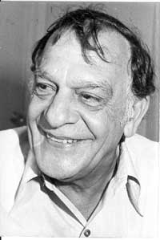

No hay reunión, plenaria, congreso (y el más reciente de la UNEAC lo reafirmó), caracoles de todo tipo (no sólo el de la UNEAC) que ella no protagonice, se “robe el show” o dé pie a que muchos, en su nombre lo hagan, a veces como pretexto para dar rienda suelta a vaya usted a saber qué ocultos fantasmas, resentimientos y delirios, pero lo cierto es que nunca abandona los planos estelares de discusiones, debates y…combates.
La TV cubana es siempre la reina del baile de las ideas y los criterios estéticos, ideológicos, políticos que se entrecruzan y giran (ojalá siempre para bien) en ocasiones como estas: el reciente cónclave de los escritores y artistas del país sacó al ruedo decenas de temas escabrosos, polémicos y urgidos de confrontación, pero la pequeña pantalla siguió en el primer escaño. Se entiende: resulta el medio por antonomasia, el antídoto preferido (no digo que el mejor) a las horas de ocio, el estimulante ideal de la mayoría para informarse e instruirse, el principal incidente en la vida sociocultural desde la amplitud y diversidad de sus propuestas.
Ese abanico de funciones (y otras muchas que no menciono aquí) la hace blanco de exigencias, de inconformidades, de reclamos en consonancia con la diferencia de gustos, niveles culturales y preferencias de sus muchos receptores, unido a las deficiencias que por las más variadas razones muestra a diario.
Me temo, sin embargo y a pesar de ellas, que no siempre se es justo respecto a las frecuentes y duras estocadas de que es blanco la pequeña pantalla del patio, porque puestos a comparar, estoy absolutamente convencido de que no tenemos ni con mucho la peor televisión del mundo, incluso entendido este último término literalmente, e incluyendo en él, por supuesto, al desarrollado Occidente, que en no pocos casos une (o más bien opone) a la vanguardia técnica y científica las más idiotizantes, absurdas e insufribles programaciones.
Entre los reality shows y los programas de participación diseñados para una cultura light (en el mejor de los casos); lo peor de las telenovelas y filmes; las secciones en espacios “de variedades” auspiciados por People y otras revistas que no llamo del corazón para no desvirtuar ese órgano tan importante, como se sabe, en tantos sentidos (habría que buscar otras partes del cuerpo para calificar aquellas); y la pornografía política, todavía más aberrante que la literal, se conforman ofertas destinadas a embrutecer, a “educar” un telespectador que no ejercite las neuronas sino que las ponga en función de espectáculos que le exigen el esfuerzo empleado en contemplar una pecera, y en nombre de un muy discutible concepto de entretenimiento que en realidad significa banalidad y vacuidad.

Ante un panorama tan complejo y difícil como nuestra TV, en mi condición de juez y parte, de persona que trabaja en los medios y a la vez hace crítica de los mismos, resulta difícil hallar el justo medio, el equilibrio, pero es eso lo que intento ante esos frecuentes ataques de los que hablaba, y es que, absolutamente vulnerable, constantemente perfectible, legítimamente criticable, con talones de Aquiles y de toda la mitología griega (y afrocubana, para estar más a tono), la televisión cubana puede pasearse ufana entre sus homólogas latinoamericanas y de mucho más allá, como una de las más cultas, variadas y por ello, mejores.
Pocas televisoras estatales (dejemos fuera los canales privados en los que operan otros mecanismos de oferta y demanda) logran exhibir, digamos, la cantidad de espacios concretamente culturales como la del patio, entre ellos, los que cuentan con expertos que enseñan, motivan con sus certeros análisis a la comprensión y la reflexión y por ello, educan; y es cierto que los de cine, dada justamente su diversidad geográfica y genérica, hacen mayoría, pero están asimismo los de música, incluyendo la lírica y la clásica, los de danza y ballet (también con el más amplio espectro) la literatura, el teatro, las artes plásticas…
En tal sentido, podemos darnos con una piedra en el pecho de que, por ejemplo, aún con la hegemonía yanqui (que es, en definitiva, un problema internacional) la programación fílmica incluya tantas propuestas de Europa, Asia, África y América Latina que sólo en contados canales privados, de difícil acceso por lo caros que resultan, pudieran hallarse; que contemos incluso con un programa de documentales, ese preterido género; que se ofrezca lo mejor de espectáculos danzarios y musicales, de fuera y de dentro, de las más diversas tendencias; que la ópera y el ballet clásico posean más de un espacio, además, como decía, con oportunos, orientadores y especializados comentarios; que la crítica literaria esté presente en programas afines y que en otros haya oportunidad de conocer la trayectoria de valiosos intelectuales y escritores, con mucha frecuencia de provincias. Y como si fuera poco, con algún que otro programa de debate y diálogo sobre esos y otros tantos temas.
¿Que no basta, que hace falta mucho más?: no lo dudo; ¿que determinado presentador o comentarista no es de mi gusto?: para este último se han hecho los (c)olores y sus respectivas gamas y nadie monopoliza (ni pretende, creo yo) la verdad absoluta; ¿que no tengo hábitos de ciertos filmes de países determinados, que no soporto el canto lírico, que no me va la danza demasiado “culta”?: con ese objetivo precisamente, entre otros nobles propósitos, se han diseñado tales programas: ir creando un nuevo gusto estético, o mejor, perfeccionándolo, de modo que podamos sin complejos (que para todo y todos hay tiempo y lugar) tararear una pieza musical ligera y hasta de dudoso gusto, reírnos con un show humorístico o probar conocimientos en un espacio a ello destinado, “desconectar” con una comedia banal o una telenovela rutinera pero después (o antes) establecer de nuevo el enchufe con los valores espirituales superiores que se desprenden de esas propuestas otras, de respirar y deglutir la auténtica cultura, que por cierto, es siempre alta.
No creo que una televisión que ha ampliado su radio, que ha incorporado varios canales (de perfil, a propósito, expresamente “educativo”) y una programación de madrugada que supone un esfuerzo titánico, un gasto millonario de recursos, energía y dinero, pueda garantizar en un ciento por ciento esa calidad máxima y absoluta que los hipercríticos reclaman con el fósforo en una mano y la gasolina en la otra; no se me ocurre cómo, si lo que más produce, exhibe y distribuye el cine internacional tiene sello hollywoodense, con todo lo que ello implica, podamos renunciar, sobre todo contando con tantos espacios fílmicos (ahora convendría si acaso reducir estos) a programar un cine norteamericano que satura y abruma por todas partes; no encuentro la fórmula de, en aras de un “entretenimiento” a mansalva (con todo lo ambiguo y vasto que significa el vocablo), desterrar esas conquistas encaminadas a la instrucción, la ampliación de horizontes culturales y la reeducación estética de un público, que a propósito, con ella se torna más exigente y refinado.
Creo que entre esto y la basura ni siquiera maquillada que ofrecen ciertos “comprimidos” y “paquetes” que se ven por ahí, me quedo con mi televisión imperfecta, con tejado de vidrio y todos los defectos que se quiera, y no, a propósito, por chovinismo de tipo alguno, por aquello del martiano “vino agrio” que, a propósito, es una frase, como muchas del Apóstol, generalmente mal citada.
Yo estoy de acuerdo con, y me sumo a, quienes desean perfeccionar y refinar el vino para servirlo y degustarlo mejor, pero no con quienes de ciertas manera lo vomitan y lo lanzan sin recato por el vertedero.